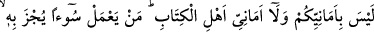

vermeyeceği gibi îmanla berâber tâatsizliğin ve ma’siyetin de kişiye zarar vermeyeceği
vehminin bâtıl olduğunu, hem îmandan hem de amelden dolayı sevab kazanılacağını
beyân etmek içindir.
“Allah” bunu onlara “hak bir söz olarak vâdetti.” Yâni Allah bunu onlara gerçekten
va’detmiştir. “Söz verme ve onu tutma bakımından kim Allah’tan daha doğru
olabilir?” Allah’tan daha doğru sözlü ve va’dini tutan hiç kimse yoktur. Allah Teâlâ her
konuşandan daha doğru sözlü olup onun va’di kabûl etmeye daha lâyıktır. Şeytanın va’di
ise kavuşulması imkansız boş hayallerden ibârettir.
123- Ne sizin kuruntularınız ne de ehl-i kitâbın kuruntuları (gerçektir); kim bir
kötülük yaparsa onun cezâsını görür ve kendisi için Allah’tan başka dost da,
yardımcı da bulamaz.
“Ne sizin kuruntularınız ne de ehl-i kitâbın kuruntuları (gerçektir)” Yâni, ey
müslümanlar! Allah’ın va’dettiği mükâfât ne sizin kuruntularınızla ne de ehl-i kitâbın
kuruntularıyla hâsıl olur. O, ancak îman ve sâlih amelle gerçekleşir. Müslümanların
kuruntuları, büyük küçük bütün günahlarının affedileceği ve îman ettikten sonra hiç bir
günahtan sorumlu tutulmayacaklarıdır. Ehl-i kitâbın kuruntuları ise; “Biz Allah’ın
oğulları ve sevgilileriyiz.” (Mâide, 5/18) o bize azab etmez.” dedikleri gibi Allah’ın
onlara azab etmeyeceği ve onları cehenneme ancak birkaç gün sokacağıdır.
Hasan Basrî şöyle demiştir: “Îman temennî ile olmaz. Îman kalbe yerleşen ve amelin
de onu doğruladığı şeydir. Kendilerini nasıl olsa Allah’ın bağışlayacağı kuruntusunun
avuttuğu bir topluluk hiç bir haseneleri olmadan iyilik yapmadan dünyâdan göçerler de:
“Biz Allah hakkında iyi zan içindeydik” derler. Onlar bu sözlerinde yalancıdırlar. Eğer
Allah hakkında zanları iyi olsaydı iyi amel yaparlardı.”
Birisi de şöyle demiştir: Amelle berâber olan ümide reca denir. Böyle olmazsa
“ümniyye” yâni kuruntu olur. Kuruntu da ölümdür. Çünkü kuruntu âhiret hayâtına fayda
verecek şeyleri aksatmaya sebep olur.
Sa’dî (k.s.) şöyle der:
Kıyamet günü cennet pazarını kurduklarında
Dereceler iyi amellere göre belirlenir
Ne kadar sermaye getirirsen o kadar götürürsün
Eğer müflis isen, utangaçlık götürürsün
İyi ameli çok olan kimsenin
Hakk’ın katında derecesi yüksek olur